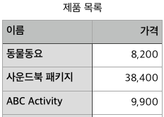
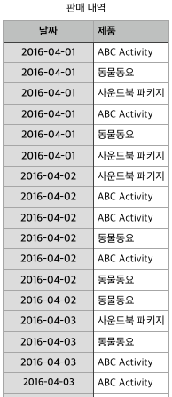
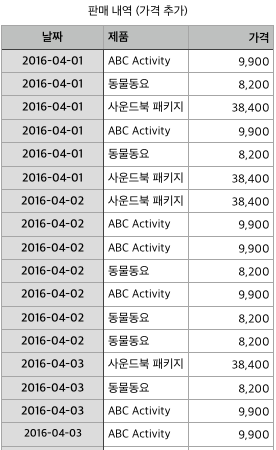
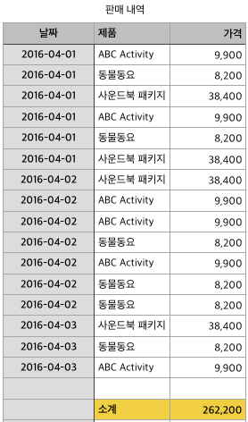
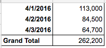
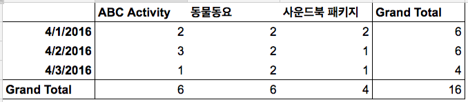
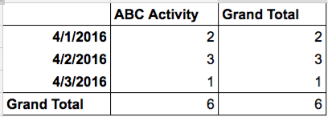
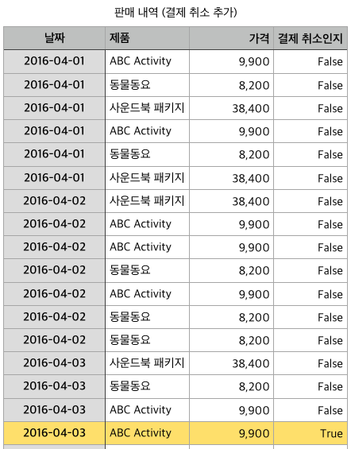
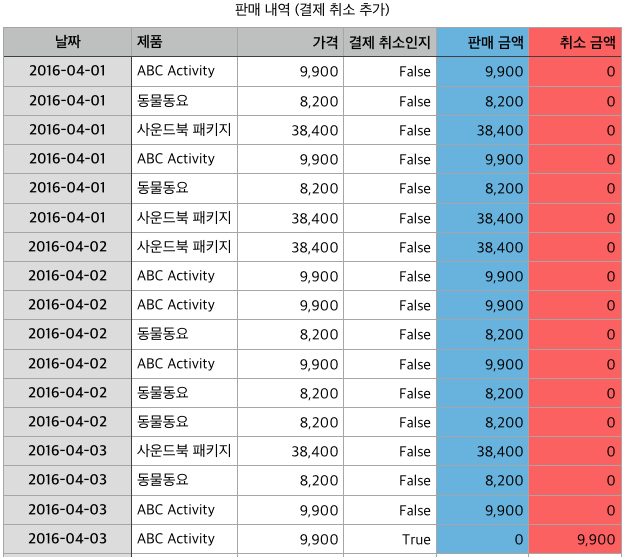
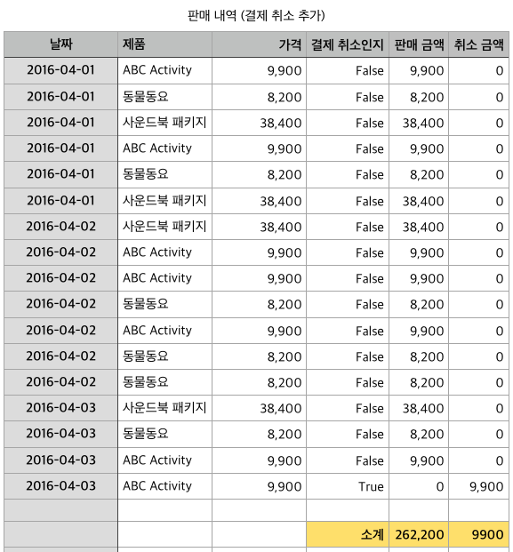

Django ORM을 강력하게 만들어주는 기능 중 하나는 바로 애너테이션(annotate)과 애그리게이션(aggregate)입니다. 이 두 기능이 명쾌하게 와닿지 않아서 사용하지 못하다가, 엑셀에 빗대어 이해해보니 제게는 도움이 되어서 해당 내용을 공유합니다.
시작하기 전에
- 표기법:
이건 Django 메서드 이름, 이건 필드나 값 을 나타냅니다. - 메서드의 링크는 Django 공식 문서로 연결됩니다
모델 구성
다음과 같은 제품을 판매하는 온라인 쇼핑몰을 만든다고 합시다. (원래는 제품별 id도 있겠지만, 설명을 간단히 하기 위해 생략하겠습니다.)

이를 Django 모델로 구현해보면 다음과 같을 겁니다.
class Product(models.Model):
name = models.CharField('이름', max_length=150, unique=True)
price = models.IntegerField('가격')
이제, 이 제품들이 팔린 내역이 다음과 같다고 해보죠.

이러한 판매 내역을 모델로 구현하면 다음과 같겠고요.
class OrderLog(models.Model):
product = models.ForeignKey('Product')
created = models.DateTimeField(u'판매일')
엑셀 화면과 코드를 비교해 보면 엑셀의 컬럼 하나가 Django의 필드 하나와 대응됨을 발견할 수 있습니다.
데이터베이스를 구성했으니, 이 코드를 실행해서 실습용 데이터를 만들어주세요.
총 판매액 구하기
판매 내역을 보면 물품 이름만 있고 가격이 적혀 있지 않습니다. 엑셀에서 작업할 때라면 1. 제품별 가격을 옆에 적어두고, 2. 그 값을 모두 더해서 총 판매액을 알 수 있겠죠. 이 과정을 Django로 따라해 봅시다.
1. 제품별 가격 참조하기(values)
엑셀 버전
엑셀에서 제품별 가격을 적었다면 다음과 같은 화면이 되겠죠. (실제로는 일일이 찾지 않고 제품 이름으로 참조하여 판매 가격 컬럼을 자동으로 채을 겁니다.)

Django 버전
이를 Django에서 구현하려면 values 메서드를 사용하면 됩니다.
order_qs = OrderLog.objects.values(
'created', 'product__name', 'product__price'
)
order_queryset의 내용을 출력해보면 엑셀과 같음을 알 수 있습니다.
>>> for order in order_qs:
... print(order)
...
{'product__price': 9900, 'created': datetime.datetime(2016, 4, 1, 0, 0), 'product__name': 'ABC Activity'}
{'product__price': 8200, 'created': datetime.datetime(2016, 4, 1, 0, 0), 'product__name': '동물동요'}
# (중략)
{'product__price': 9900, 'created': datetime.datetime(2016, 4, 3, 0, 0), 'product__name': 'ABC Activity'}
밑줄 두 개가 붙은 모습이 보기에 좋지 않고, 타이핑하기도 귀찮으니까 짧은 이름으로 바꿔주겠습니다.
# 앞의 쿼리를 재작성
order_qs = OrderLog.objects.annotate(
name=F('product__name'),
price=F('product__price')
).values(
'created', 'name', 'price'
)
# 내용을 보면,
{'price': 9900, 'created': datetime.datetime(2016, 4, 1, 0, 0), 'name': 'ABC Activity'}
{'price': 8200, 'created': datetime.datetime(2016, 4, 1, 0, 0), 'name': '동물동요'}
{'price': 38400, 'created': datetime.datetime(2016, 4, 1, 0, 0), 'name': '사운드북 패키지'}
...
# (하략)
이후 등장할 코드에는 Django ORM 메서드가 많이 나오는데요. 필요한 메서드를 미리 불러두시면 좋습니다.
from django.db.models import F, Sum, Count, Case, When
방금 사용한 애너테이션(annotate)은 필드 하나를 만들고 거기에 '어떤 내용'을 채웁니다. 엑셀에서 컬럼 하나를 만드는 것과 같다고 생각하면 됩니다.
'내용'에는 1. (방금 했듯이) 다른 필드의 값을 그대로 복사하거나, 2. (이후에 나오겠지만) 다른 필드의 값들을 조합한 값을 넣을 수 있습니다.
annotate의 사전적 의미는 '주석을 달다'인데요. Django에서는 주석 대신 '필드'를 추가한다고 생각하시면 되겠습니다. (엑셀이라면 컬럼을 추가하는 셈이겠고요.)
2. 제품 가격 모두 더해서 총 판매액 구하기(aggregate, Sum)
그럼 이제 price의 값을 모두 합하여 총 판매액을 구해야겠죠.
엑셀 버전
엑셀에서는 수식을 사용하여 해당 필드 전체를 더해줍니다.

Django 버전
Django에서 쿼리셋의 특정 필드를 모두 더할 때는 애그리게이션(aggregate) 메서드를 사용합니다.
# 앞의 코드에서 이어집니다.
>>> order_qs.aggregate(total_price=Sum('price'))
{'total_price': 262200}
aggregate의 사전적 의미는 '합계', '종합'입니다. Django에서는 필드 전체의 합이나 평균, 개수 등을 계산할 때 사용하면 됩니다. (엑셀에서는 한 컬럼 전체의 합이나 평균, 개수를 계산한다고 보면 되겠고요.)
일별 판매액 구하기(values, annotate, Sum)
총 판매액이 아닌 일별 판매액을 구할 땐 어떻게 할까요?
엑셀 버전
엑셀이라면 피벗 테이블을 만들텐데요. 피벗 테이블에 익숙하지 않은 분을 위해 간단히 설명을 하자면, 기준(pivot)을 정하고 이 기준에 따라 값을 묶는 기능이라고 생각하시면 됩니다. (자세한 사용 방법은 엑셀 2013 도움말을 참고하세요.)
예를 들어, 날짜를 행의 기준으로 정하고 가격을 묶으면(=합계), 다음과 같이 일별 판매액을 알 수 있겠죠.

Django 버전
Django에서 뭔가를 기준으로 값들을 묶고 싶다면 values와 annotate를 사용하면 됩니다. 여기서는 날짜(created)가 기준이 되고, 날짜별로 묶고 싶은 값은 가격(price)입니다. 묶은 값들은 모두 더해서 daily_total 필드에 넣어주었습니다.
values 메서드 이전에 annotate로 추가했던 필드는, values 메서드 이후에 나오는 annotate 메서드에서 참조할 수 없습니다. 아쉽지만 여기서는 product__price를 그대로 적어주어야 합니다.
daily_list = order_qs.values(
'created'
).annotate(
daily_total=Sum('product__price')
)
# 내용을 확인해보면,
>>> for data in daily_data_list:
... print(data)
...
{'daily_total': 113000, 'created': datetime.datetime(2016, 4, 1, 0, 0)}
{'daily_total': 84500, 'created': datetime.datetime(2016, 4, 2, 0, 0)}
{'daily_total': 64700, 'created': datetime.datetime(2016, 4, 3, 0, 0)}
날짜별+제품별 판매 개수 구하기(values, annotate, Count)
조금 더 들어가 봅시다. 이제는 날짜별로 각 제품이 몇 개씩 팔렸는지 알고 싶습니다.
엑셀 버전
엑셀에서는 역시나 피벗 테이블을 사용하겠죠. 아까의 피벗 테이블에서 1. 열 기준으로 행을 추가하고, 2. 값으로는 레코드의 개수를 선택하면 아래와 같이 일별/제품별 판매 개수를 알 수 있습니다.

Django 버전
이를 Django에 옮겨보죠. values에 넣을 기준 필드는 created와 name이 되겠고요. annotate에서는 레코드 개수를 세기 위해 Count 메서드를 사용했습니다. count 필드를 만들어서 일별+제품별 판매 개수를 넣어주었고요.
daily_count = order_qs.values(
'created', 'name'
).annotate(
count=Count('name')
)
# 내용을 확인해보면,
>>> for data in daily_count:
... print(data)
...
{'count': 2, 'created': datetime.datetime(2016, 4, 1, 0, 0), 'name': 'ABC Activity'}
{'count': 2, 'created': datetime.datetime(2016, 4, 1, 0, 0), 'name': '동물동요'}
# (중략)
{'count': 1, 'created': datetime.datetime(2016, 4, 3, 0, 0), 'name': '사운드북 패키지'}
특정 제품의 날짜별 판매 개수 구하기(filter)
전체 제품이 아닌 관심 있는 제품의 날짜별 판매 개수를 알고 싶을 땐 어떻게 할까요?
엑셀 버전
엑셀에서는 피벗 테이블에 필터를 추가하면 됩니다.

Django 버전
Django에서도 필터(filter)를 추가하면 됩니다. filter 외의 부분은 바로 앞의 코드와 동일합니다.
sound_book_daily_count = order_qs.filter(
name='ABC Activity'
).values(
'created', 'name'
).annotate(
count=Count('product')
)
# 내용을 확인해보면,
{'name': 'ABC Activity', 'count': 2, 'created': datetime.datetime(2016, 4, 1, 0, 0}
{'name': 'ABC Activity', 'count': 3, 'created': datetime.datetime(2016, 4, 2, 0, 0}
{'name': 'ABC Activity', 'count': `, 'created': datetime.datetime(2016, 4, 3, 0, 0}
(심화) 결제 취소 발생!
이제 진짜 애너테이션과 애그리게이션이 유용한 사례를 살펴봅시다. 쇼핑몰에서는 판매 내역이 취소되기도 하죠. 결제가 취소되었을 때는 취소 로그를 남겨야 합니다. 여기서는 최대한 간단히 설명하기 위해 판매 내역에 결제 취소(is_cancel) 필드를 추가하고, 결제 취소 내역인 경우에는 해당 필드를 True로 설정하겠습니다.
엑셀 버전
엑셀에서는 다음과 같은 열이 추가됩니다.

Django 버전
OrderLog 모델은 다음과 같이 수정하겠습니다. (원래는 취소된 내역 자체도 참조해야 하지만, 여기서는 설명을 간단히 하고자 생략했습니다.)
# OrderLog 모델 수정
class OrderLog(models.Model):
product = models.ForeignKey('Product')
created = models.DateTimeField(u'판매일', auto_now_add=True)
is_cancel = models.BooleanField(u'결제 취소인지', default=False) # 추가된 필드
여기서는 설명하지 않겠지만, 모델을 변경했다면 데이터베이스 마이그레이션 과정을 거쳐야만 합니다.
그리고 결제 취소 내역을 추가합니다.
abc = Product.objects.get(name='ABC Activity')
may3 = datetime(2016, 4, 3)
OrderLog.objects.create(created=may3, product=abc, is_cancel=True)
(결제 취소 버전) 총 판매액 수정
지금 시점에 총 판매액을 다시 계산해보면 맨 마지막에 추가한 결제 취소 내역 때문에 다음과 같이 총 판매액이 잘못 계산됩니다.
>>> order_qs.aggregate(total_price=Sum('price'))
{'total_price': 272100}
일견, exclude를 추가해서 결제 취소 내역을 제외시키고 계산을 하려 할지도 모르겠습니다. 그래도 여전히 판매액이 틀립니다.
order_qs.exclude(
is_cancel=True
).aggregate(
total_price=Sum('price')
)
# 내용을 확인해보면,
{'total_price': 262200}
왜냐하면 총 판매액 = 순수 판매 금액 - 취소 금액이기 때문입니다. 바로 앞의 쿼리는 취소 금액을 계산하지 않습니다. (애초에 결제 취소 내역의 판매 금액을 음수로 저장하는 방법도 있지만, 여기서는 설명을 위해 그렇게 하지 않았습니다.)
그럼 이제 판매 금액과 취소 금액, 총 판매액을 계산해보겠습니다.
엑셀에서라면 1. 판매 금액 컬럼과 취소 금액 컬럼을 추가하고, 결제 취소 필드의 내용에 따라 각 컬럼에 가격을 넣은 다음, 2. 판매 금액의 합에서 취소 금액의 합을 빼주면 됩니다.
1. 결제 취소 필드에 따라 판매 금액, 취소 금액 필드 추가하기(조건적 애너테이션)
엑셀 버전
엑셀에서의 모습을 보면 다음과 같습니다.

Django 버전
이를 Django에 구현하기는 조금 까다롭습니다. 결제 취소라는 조건이 생긴 탓인데요. Django 1.8에 추가된 조건적 애너테이션을 사용하면 이 문제를 해결할 수 있습니다. 조건적 애너테이션이란, 말 그대로 특정 조건에 따라 애너테이션을 붙일 수 있는 기능입니다.
order_list_2 = order_qs.annotate(
sales_price=Case(
When(
is_cancel=False, # 결제 취소가 아닌 경우
then=F('price')
),
default=0
),
cancel_price=Case(
When(
is_cancel=True, # 결제 취소인 경우
then=F('price')
),
default=0
)
)
이렇게 하면 판매 내역인 경우 sales_price 필드에 price 값이 들어가고, 결제 취소 내역인 경우엔 cancel_price 필드에 price 값이 들어갑니다. (default=0이므로 해당하지 않는 필드에는 0이 들어갑니다.)
결과를 확인해보죠.
>>> for data in order_list_2:
... print(data)
...
{'cancel_price': 0, 'name': 'ABC Activity', 'sales_price': 9900, 'price': 9900, 'created': datetime.datetime(2016, 4, 1, 0, 0)}
{'cancel_price': 0, 'name': '동물동요', 'sales_price': 8200, 'price': 8200, 'created': datetime.datetime(2016, 4, 1, 0, 0)}
# (중략)
{'cancel_price': 9900, 'name': 'ABC Activity', 'sales_price': 0, 'price': 9900, 'created': datetime.datetime(2016, 4, 3, 0, 0)}
2. 판매 금액의 합 - 취소 금액의 합 = 총 판매액
이제 판매 금액의 합에서 취소 금액의 합을 빼 봅시다.
엑셀 버전
엑셀에서라면 다음과 같이 소계가 추가될 겁니다.

Django 버전
이를 Django로 옮기면 다음과 같습니다.
# 위에서 이어집니다.
result = order_list_2.aggregate(
total_price=Sum('sales_price')-Sum('cancel_price')
)
판매 금액의 합(Sum('sales_price'))에서 취소 금액의 합(Sum('cancel_price'))을 빼서, total_price 필드에 넣었습니다. 특정 필드 전체에 대한 연산이므로 애그리게이션(aggregate)을 사용했습니다.
# 내용을 확인해보면,
>>> result
{'total_price': 252300}
(결제 취소 버전) 특정 제품의 날짜별 판매 개수 계산하기
특정 제품의 날짜별 판매 개수에도 역시 결제 취소 내역이라는 장애물이 생겼습니다. 총 판매액에서처럼 조건적 애너테이션을 사용하면 계산할 수 있겠는데요. 일단 결제 취소 내역이 발생하기 전의 코드를 다시 살펴보죠.
# 결제 취소가 생기기 전 버전
sound_book_daily_count = order_qs.filter(
name='사운드북 패키지'
).values(
'created', 'name'
).annotate(
count=Count('product')
)
애너테이션(annotate) 부분을 수정하면 될 것 같습니다.
sound_book_daily_count = order_qs.filter(
name='ABC Activity'
).values(
'created', 'name'
).annotate(
count=Sum(
Case(
When(
is_cancel=False, then=1,
),
When(
is_cancel=True, then=-1
),
output_field=IntegerField(),
default=0
)
)
)
총 판매액 쿼리와는 살짝 달라진 모습을 알 수 있습니다. 순수 판매 내역인 경우엔(is_cancel=False) 1을 넣고(then=1), 결제 취소 내역인 경우엔(is_cancel=True) -1을 넣습니다(then=-1). 그리고 이 값들을 모두 합해서 count 필드에 넣었습니다.
결과는 다음과 같습니다.
{'name': 'ABC Activity', 'count': 2, 'created': datetime.datetime(2016, 4, 1, 0, 0}
{'name': 'ABC Activity', 'count': 3, 'created': datetime.datetime(2016, 4, 2, 0, 0}
{'name': 'ABC Activity', 'count': 0, 'created': datetime.datetime(2016, 4, 3, 0, 0}
4월 3일의 판매 개수에서 결제 취소 내역이 제대로 반영되었음을 알 수 있습니다.
(부록) 반복되는 애너테이션 구문은 저장해서 사용하기
조건적 애너테이션 구문은 항상 길어지기 마련이라 유지보수하기가 어려워지는 단점이 있는데요. 만약 여러 군데서 같은 구문을 사용한다면 다음과 같이 중복을 없앨 수 있습니다.
먼저 조건적 애너테이션 구문을 저장해놓고,
REAL_COUNT = Sum(
Case(
When(
is_cancel=False, then=1,
),
When(
is_cancel=True, then=-1
),
output_field=FloatField(),
default=0
)
)
저장한 애너테이션 구문은 다음과 같이 사용합니다.
sound_book_daily_count = order_qs.filter(
name='ABC Activity'
).values(
'created', 'name'
).annotate(
count=REAL_COUNT
)
요약
지금까지 Django의 애너테이션과 애그리게이션에 대해 알아보았습니다. 요약하면 다음과 같습니다.
- Django 모델의 필드는 엑셀의 컬럼에 대입된다고 생각합시다.
- 애너테이션(
annotate)은 엑셀에서 계산용 컬럼을 하나 추가하는 것과 같습니다. - 애그리게이션(
aggregate)은 엑셀에서 특정 컬럼 전체를 대상으로 계산하는 것과 같습니다. (합, 평균, 개수 등)
이 정도만 이해하신다면, Django의 annotate와 aggregate 메서드를 좀더 친근하게 사용하실 수 있을 겁니다. :)